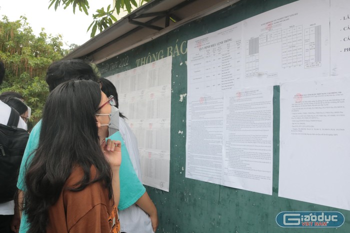

Từ năm học 2022-2023: Đổi mới cách dạy Ngữ văn, khắc phục tình trạng văn mẫu
Nhằm khắc phục tình trạng học thuộc lòng văn mẫu, đọc chép... Bộ GD đã có công văn hướng dẫn đổi mới phương pháp dạy học và kiểm tra, đánh giá môn Ngữ văn. Ngày 21/7, Bộ Giáo dục và Đào tạo đã có công văn gửi các Sở Giáo dục và Đào tạo về việc hướng dẫn đổi mới phương pháp dạy học và kiểm tra, đánh giá môn Ngữ văn ở trường phổ thông. Theo đó, để tiếp tục khắc phục tình trạng dạy học nặng nề về thuyết giảng, đọc chép và yêu cầu thuộc lòng theo văn mẫu, Bộ Giáo dục và Đào tạo yêu cầu các Sở Giáo dục và Đào tạo chỉ đạo các cơ sở giáo dục phổ thông, giáo dục thường xuyên (nhà trường) thực hiện những nội dung sau:Đổi mới dạy và học môn Ngữ văn

Văn bản nêu rõ, cần tăng cường hơn nữa việc phát huy tích cực, chủ động sáng tạo của học sinh trong quá trình học tập môn Ngữ văn; dành nhiều thời gian cho các hoạt động thực hành, vận dụng, trình bày, thảo luận để rèn luyện kỹ năng đọc, viết, nói, nghe và cảm thụ thẩm mĩ theo yêu cầu, mức độ với từng lớp học, cấp học.
Trong quá trình dạy học, giáo viên cần giao nhiệm vụ học tập rõ ràng, phù hợp với khả năng của học sinh; nêu cụ thể các yêu cầu về sản phẩm mà học sinh phải hoàn thành; chú trọng kiểm tra, đánh giá, hỗ trợ, động viên học sinh thực hiện nhiệm vụ học tập.
Ngoài ra, cần xây dựng kế hoạch bài dạy và tổ chức dạy học môn Ngữ văn theo hướng tăng cường rèn luyện cho học sinh phương pháp đọc, viết, nói và nghe; thực hành, trải nghiệm tiếp nhận và vận dụng kiến thức tiếng Việt, văn học thông qua các hoạt động học ở trong và ngoài lớp học.
Đối với dạy đọc, xác định rõ mục đích giúp học sinh biết cách đọc và tự đọc hiểu được văn bản; thông qua đó hình thành phẩm chất, nhân cách học sinh. Coi ngữ liệu là phương tiện và việc tìm hiểu ngữ liệu là cách thức để hình thành, phát triển năng lực đọc hiểu văn bản.
Đối với dạy viết, chú trọng yêu cầu học sinh hình thành ý tưởng, biết cách trình bày ý tưởng một cách mạch lạc, sáng tạo, có sức thuyết phục để qua đó rèn luyện tư duy và cách viết các kiểu văn bản. Tập trung vào yêu cầu hướng dẫn học sinh thực hiện các bước tạo lập văn bản.
Đổi mới cách đánh giá học sinh trong môn Ngữ vănBộ Giáo dục và Đào tạo cũng yêu cầu các trường cần đổi mới cách đánh giá học sinh trong môn Ngữ văn, cụ thể:
Việc đánh giá học sinh trong môn Ngữ văn phải đảm bảo nguyên tắc phát huy được những mặt tích cực cá tính, trí tưởng tượng, năng lực ngôn ngữ, năng lực văn học, năng lực tư duy hình tượng và tư duy logic của học sinh.
Giáo viên tập trung thiết kế và sử dụng các câu hỏi, bài tập yêu cầu học sinh vận dụng kiến thức đã học và kỹ năng đọc, viết, nói, nghe vào bối cảnh và ngữ liệu mới; tạo cơ hội để học sinh khám phá những tri thức mới, đề xuất ý tưởng và tạo ra sản phẩm mới; gợi mở những liên tưởng, tưởng tượng, huy động được vốn sống vào quá trình đọc, viết, nói, nghe.
Trong quá trình đánh giá kết quả học tập cuối kì, cuối năm học, cuối cấp học, tránh dùng lại các văn bản đã học trong sách giáo khoa làm ngữ liệu xây dựng các đề kiểm tra đọc hiểu và viết để đánh giá chính xác năng lực học sinh, khắc phục tình trạng học sinh chỉ học thuộc bài hoặc sao chép nội dung tài liệu có sẵn.
Đặc biệt, Bộ Giáo dục và Đào tạo khuyến khích giáo viên xây dựng và sử dụng các đề mở trong kiểm tra, đánh giá để phát huy cao nhất khả năng sáng tạo của học sinh. Xây dựng bộ công cụ đánh giá để hạn chế tính chủ quan, cảm tính của người chấm.
Khi nhận xét, đánh giá các sản phẩm của học sinh, giáo viên cần tôn trọng và khuyến khích cách nghĩ, cách cảm riêng của học sinh trên nguyên tắc không vi phạm những chuẩn mực đạo đức, văn hoá và pháp luật.
Bộ Giáo dục và Đào tạo yêu cầu các Sở Giáo dục và Đào tạo, phòng Giáo dục và Đào tạo chỉ đạo các nhà trường trên địa bàn để thực hiện đầy đủ, nghiêm túc hướng dẫn này cho năm học 2022 - 2023.
Trong quá trình thực hiện, nếu có vướng mắc, báo về Bộ Giáo dục và Đào tạo qua Vụ Giáo dục Tiểu học, Vụ Giáo dục Trung học, Vụ Giáo dục Thường xuyên để cùng phối hợp giải quyết.